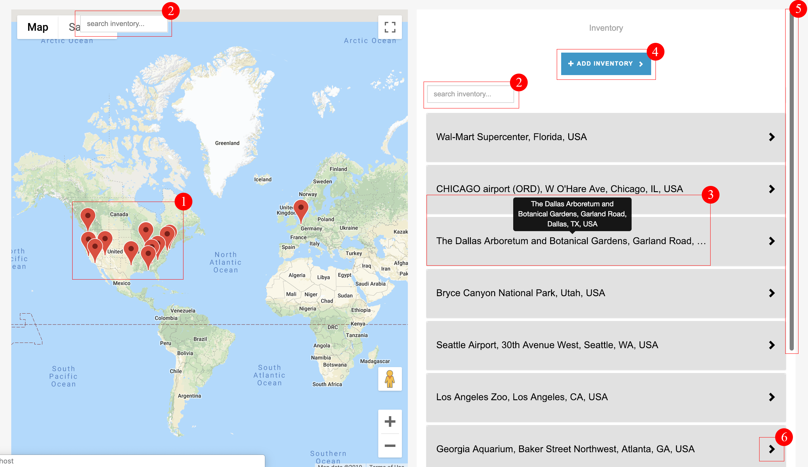
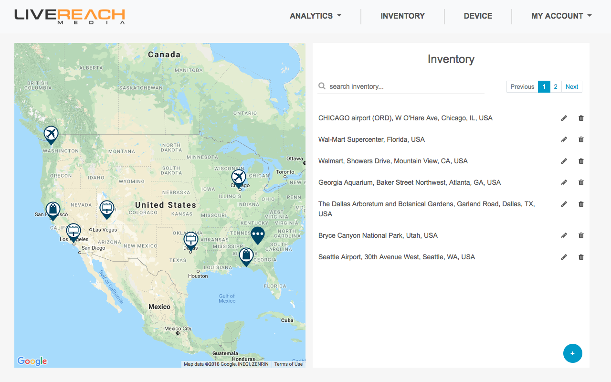
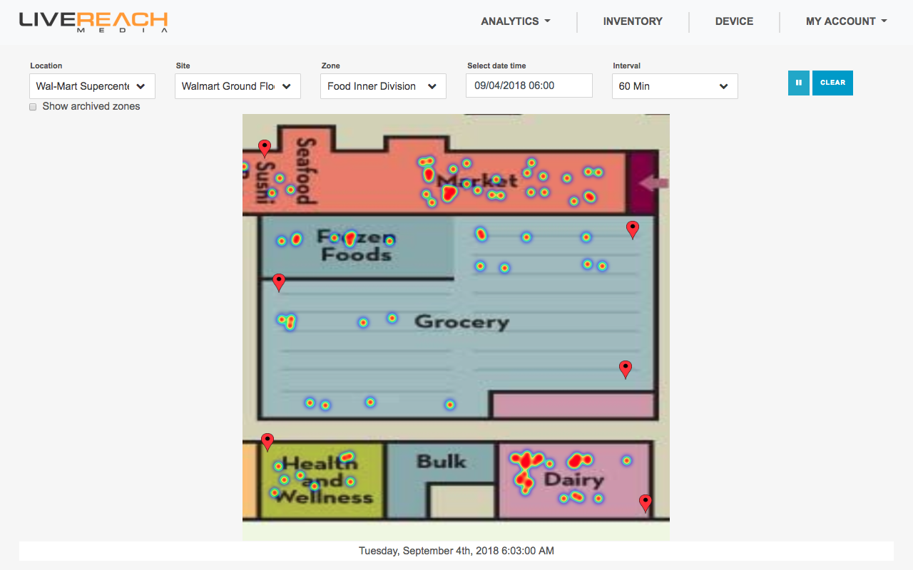

Live Reach Media
About the company:
LiveReach Media’s digital Out-of-Home platform empowers advertisers, publishers and retailers through its advanced analytics and ad serving capabilities. Our goal is to bring the online programmatic advertising capabilities to the Digital Out-of-Home market.
Users:
There are two types of users,
Publishers: ones who maintain the digital inventory (for
example digital displays and billboards, their locations etc).
Advertisers: who wish to play their advertisements on the
inventory
maintained by the
publisher.
Purpose of the product:
To provide analytics based solutions for digital out-of-home advertising and facilitating interactions between display owners & advertisers.
My Role:
To design and develop a web interface to facilitate the interaction between advertisers and publisher and also visualize the analytics we produce.
Team Members:
Four front-end developers alongside
Process
The process we follow at Livereach Media is quite similar to a software development process but is paced at a very quick rate. We try to cover each of these phases in about a max of two days so that each feature is released soon.
IDEA
DESIGN
DEVELOP
TEST
INTEGRATE
DEPLOY
Problem Identification
User feedback
I was communicated that the users found it difficult to navigate around and significant features were masked behind buttons and accordions which made them difficult to discover without a prior demo. A detailed survey led to the following points:
- The map is congested with pins that don't make much sense. There is no way to determine which pin represents corresponding location.
- Congested UI; too many operations filled in one place.
- The map size is small, therefore it is difficult to plot devices.
- Many features are abstracted and are not easy to carry out without prior knowledge.
UI Evaluation

Problems
- Map pins are crowded and aren't indicative of the type of inventory they contain.
- Duplicate actions such as "Search Inventory" are ambiguous and confusing.
- Full name of the inventory is visible on hover in a a tooltip.
- Add inventory operations are revealed on clicking this button which are inturn buttons to reveal forms. This nesting is confusing and users lose track of what they want to do.
- Long list of inventory is visible as you scroll and not at a glance. The padding for each inventory makes the list even longer.
- Significant inventory operations like edit & delete and inventory details are masked behind these which is again confusing since the elements do not look clickable.
Solution
Problem correction

Improvements
- Map pins have more meaningful icons. Also map is zoomed correctly so the pins do not look overcrowded
- Duplicate search box has been removed and a suitable graphic is added to prevent ambiguity.
- Inventory names are fully visible.
- Add inventory changed to dropdown to prevent masking of features.
- Long list of Inventory is paginated for a cleaner look. Extra padding of elements is eliminated.
- Edit and delete operations are visible and don't require added clicks.
Restructuring Inventory Hierarchy
After understanding the user's requirements, we finalized the following types of inventory:
- Location: A point on a google map denoting the physical co-ordinates of the inventory.
- Site: An image of a site layout containing multiple devices.
- Device: A physical device that logs data which is required to compute our metrics.
- Zone: A cut out from a site, which is a special area of interest for data & metric visualization.
Adding Locations
Improvements
- Added location categories so as to distinguish between different types of inventory.
- Map area increased at the time of addition so as to have a wider area for plotting.
- Enabled searching on google map to speed up the add location process. A pin is dropped at the address searched for.
- Pins made draggable to adjust location easily & precisely.
- Appropriate notification of success/failure post addition.
Adding Sites
Improvements
- Widened site map area to precisely edit site image.
- Added image editing tools so that site images can be edited on the go, one need not search for editors to crop and rotate images.
- Appropriate notification of success/failure post addition.
Adding Devices
Improvements
- Enabled zooming(bottom right corner) into images for precise plotting of device pins.
- Allows you to add multiple devices in one go, thus saving time.
- Implemented draggable pins to precisely adjust the location of the pins.
Adding Zones
Improvements
- Zoom and Crop options to easily cut out zones.
- Zones need a minimum of 3 devices. Thus, added appropriate error messages on selection of less than 3 devices
Feature Design & Development
Heat Maps
Task:
Live tracking of population in a restricted area(zone) to be able to determine trends and patterns in movement.
Input:
Inventory Name, Date & Time & Duration.
Output:
A heatmap to show the concentration of people over a site image along with the timestamp.
Specs:
HTML5 Canvas
The image below shows the population distribution in a supermarket.
Path Visualization
Task:
Track movements between zones and visualize this data to determine the top popular and populous paths.
Input:
Source Zone
Output:
A sunburst chart to show most popular paths taken across a site.
Specs:
SVG & D3js

Analytics Design
Task:
Design a dashboard page to showcase LiveReach's computed metrics and live data.
Input:
Inventory Name
Design tool:
AdobeXD.
Specs:
SVG, Nvd3 & AngularJS
Early Exploration Wireframe
Pros
- Simple dashboard
- Easy navigation
- All metrics shown in a single frame (No need to scroll)
Cons
- Live Data missing
- Location not required
- Scales (day hour min) and date range not taken into consideration
Final wireframe design
Pros
- Fit to screen dashboard
- Provides a quick glance at live data in the right hand column
- Provides scale & date range selection